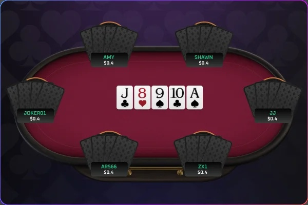
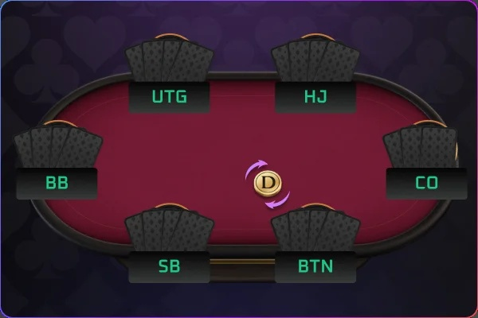
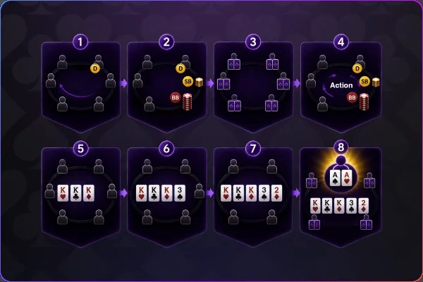
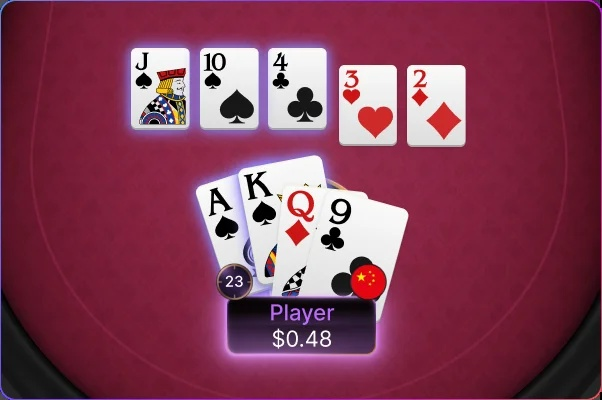
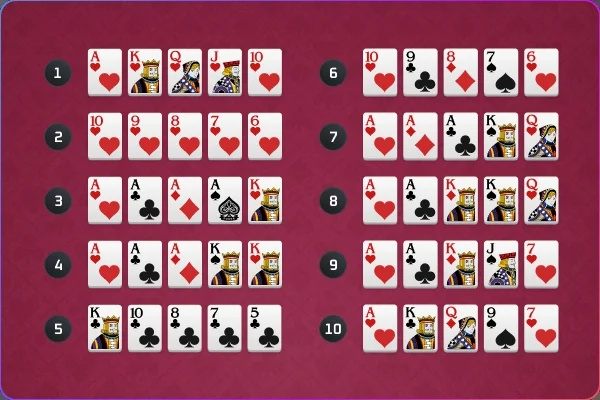

底池限注的規則（PLO）
四張底牌，更多決策
每一次下注都有更多可能
Pot Limit Omaha（PLO）採用四張底牌，玩家必須使用 2 張手牌 + 3 張公共牌 組成最佳牌型。更多起手組合、更高的成牌機率，讓每一圈下注都充滿策略與變化。
遊戲簡介

奧馬哈和德州撲克的遊戲進行方式流程相同，差異如下：
• 奧馬哈的每位玩家可以分到”4張”手牌
• 只能運用4張手牌中的”2張”來和檯面上的公共牌取”3張”湊成最佳5張牌的組合。
• 本平台一律採用底池限注的規則(PLO)
玩家的下注跟加注不能超過底池大小
位置介紹（以6人桌為例）

• 小盲位 (SB): 莊家左邊第一位，需強制下注小盲注。翻牌後第一個行動，位置不利。
• 大盲位 (BB): 小盲左邊，強制下注大盲注。翻牌前最後行動，偶爾可免費看翻牌。
• 槍口位 (UTG): BB左邊第一位，也是6人桌的前位，翻牌前第一個行動，須謹慎行動。
• HighJack (HJ): UTG左邊，屬於中間位置，可適度擴張起手範圍。
• CutOff (CO): BU前一位，屬於後位，有很強的進攻與偷盲潛力。
• Button (BU / BTN): 每局發牌者，翻牌後最後行動，資訊最完整，是最有利的位置。
遊戲流程

奧瑪哈的每一局會經歷以下階段：
1. 決定莊位：牌局中順時針依序由每個玩家擔任莊位。
2. 盲注（小盲與大盲）：SB與BB玩家先強制下注，形成初步底池。
3. 發手牌（Hole Cards）：每位玩家獲得4張蓋著的手牌。
4. 翻牌前（Preflop）：玩家開始第一輪行動，從UTG依序進行。
5. 翻牌圈（Flop）：發出3張公共牌，進入第二輪行動。
6. 轉牌圈（Turn）：發出第4張公共牌，進行第三輪行動。
7. 河牌圈（River）：發出第5張公共牌，最後一輪行動。
8. 攤牌（Showdown）：若有兩人以上未棄牌，比牌型大小，贏家拿走底池。
組牌規則

• 和德州撲克不同，奧瑪哈強制使用 2張手牌 + 3張公共牌
(不能用1張手牌+4張公牌 or 3張手牌+2張公牌….etc)
範例❶
• 手牌：A♠ K♠ Q♦ 9♣
• 公共牌：J♠ 10♠ 4♣ 3♥ 2♦
• 正確組法 → A♠ K♠ J♠ 10♠ 4♣ (不能用手牌”3張”A♠K♠Q ♦組成順子)
範例❷
• 手牌：A♠ J♦ 10♦ 9♣
• 公共牌：J♠ 10♠ 4♠ 3♠ 2♦
• 正確組法 → J♦ J♠ 10♦ 10♠ 4♠(不能用手牌”1張”A♠組成同花)
牌型排名

奧瑪哈是比牌型大小，不比花色大小，並且A為最大，2為最小。
1. 皇家同花順（Royal Flush）A-K-Q-J-10 同花色，最強牌型
2. 同花順（Straight Flush）五張連號，同花色
3. 四條（Four of a Kind）四張相同點數的牌
4. 葫蘆（Full House）三張相同點數 + 一對
5. 同花（Flush）五張同花色，不連號
6. 順子（Straight）五張連號，不同花色
7. 三條（Three of a Kind）三張相同點數
8. 兩對（Two Pairs）兩組一對
9. 一對（One Pair）一對相同點數
10. 高牌（High Card）沒有任一組合，比最大牌點數。